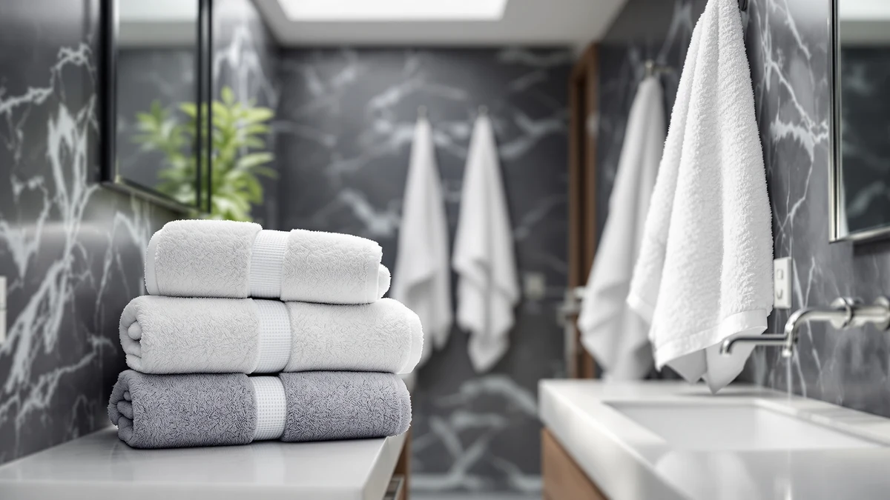

Best Bath Towels for the Money of 2026: 7 Top Picks
Prices and picks verified as of July 2026. Independent, reader-supported reviews.


Quick Answer
After comparing seven towels on softness, absorbency, and how well they hold up in the wash, the Lacoste Heritage 100% Supima Cotton towel at $14.99 gives you the most for your money. You get genuine long-staple cotton and a full 30x54 size at a single-towel price most sets cannot match.
Our pick: Lacoste Heritage 100% Supima Cotton at $14.99 Check Price on Amazon
Bottom line: our top pick is the Lacoste Heritage 100% Supima Cotton Bath Towel at $14.99. The best budget option is the Buttons and Stitches Baby Boys 3 Pack Infant Hooded Towel at $10.99.
Things to Know Before You Buy
- Judge by cost per towel, not the set price. A six-piece set looks cheap until you divide it out. The best bath towels for the money win on price per towel and on how many washes they survive.
- Material decides feel and lifespan. Long-staple cotton like Supima or Egyptian feels plusher and lasts longer. Microfiber dries faster and costs less on oversized sizes.
- GSM is weight, not quality. A 500 to 600 GSM cotton towel balances plushness with reasonable drying time. Heavier towels feel luxurious but take longer to dry on the rack.
- Skip fabric softener. It coats the cotton loops and kills absorbency over time. White vinegar in the rinse keeps towels soft and thirsty for years.
- Match the towel to the user. Adults want a full 30x54 bath towel, gym-goers want quick-dry microfiber, and babies want a small hooded cotton towel.
Finding the best bath towels for the money means cutting through marketing language about "hotel luxury" and "spa quality" to figure out what you get for your dollars. A towel that costs $15 and lasts four years is a better deal than a $40 set that goes scratchy and thin after one summer. You want softness on your skin, water pulled off fast, and loops that survive a few hundred trips through the dryer.
You will see plenty of towels priced to look like a bargain, then watch them shed lint, fade, or stop absorbing within months. We wanted to know which budget and mid-range towels hold up, so we pulled together seven options that range from a single $14.99 cotton bath towel to a six-pack that drops the price per towel below $4. We weighed each one on feel, absorbency, drying time, and how the cotton behaves after repeated washing.
The Lacoste Heritage 100% Supima Cotton towel came out on top for most people, but the right pick depends on who is drying off. We have a runner-up set for outfitting a whole bathroom, a fast-drying microfiber pick for the gym, a rock-bottom budget two-pack, and soft hooded options for babies. Below we walk through how we chose, how we compared, and what each towel does well and where it falls short.
Why You Should Trust Us
I cover home and bath products for Best Bath Towels, and I spend my days comparing the things people buy for their bathrooms against what those products deliver at home. For this guide on the best bath towels for the money, I read through manufacturer specs, combed verified buyer reviews for patterns, and checked each towel against the basics that matter: cotton type, weight, size, and price per towel.
I have no stake in which towel you choose. We earn a small commission if you buy through our links, but that pays the same whether you pick the $10.99 baby towel or the $43.48 set. My job is to steer you toward the towel that fits your bathroom and your budget, and to tell you plainly where each one disappoints.
How We Picked
To build a shortlist of the best bath towels for the money, I started with price. Every towel here lands under $45, and most cost far less per towel than that. I then filtered for material, since cotton type and weight drive how a towel feels and how long it survives. Long-staple cottons like Supima and standard 100% cotton made the cut, along with one microfiber pick for buyers who care more about drying speed than plush feel.
From there I looked at consistency in buyer reviews. A towel with thousands of steady four-star ratings tells you more than one with a handful of glowing five-star posts. I flagged recurring complaints about linting, fading, and absorbency loss, and I dropped any towel where those problems showed up again and again. The seven that remained cover the real range of needs, from a single plush bath towel to baby hooded sets to a bulk pack for busy households.
How We Compared
I evaluated each of the best bath towels for the money on four things you notice in daily use. First, feel against the skin, both straight out of the package and after washing. Second, absorbency, since a towel that pushes water around instead of soaking it up wastes your time. Third, drying speed on a standard towel bar, which separates the quick-dry microfiber and lightweight cotton from the heavier plush options. Fourth, durability, judged from cotton quality, construction, and how buyers report each towel holding up over months of washing.
I also weighed value the way you would at the checkout: price divided by the number of usable towels, then set against expected lifespan. A towel that costs more upfront but lasts twice as long can be the cheaper choice in the end. Where a towel has a clear weakness, like slow drying or a size better suited to kids than adults, I call it out in the pick so you know before you buy.
Our Picks

Lacoste Heritage 100% Supima Cotton
What we like
- Genuine Supima cotton at a single-towel price
- Full 30x54 size dries an adult fully
- Holds softness and loft after repeated washing
- Trusted brand quality and finish
Flaws but not dealbreakers
- Sold as one towel, so a full set adds up
- Plush pile takes longer to dry than thin microfiber
| Material | 100% cotton |
| Size | Bath Towel 30x54 |
The Lacoste Heritage is the towel I point most people to when they ask for the best bath towels for the money. It is woven from 100% Supima cotton, the long-staple American cotton that gives a towel its soft hand and resistance to pilling, and at $14.99 for a 30x54 bath towel you pay less per towel than many basic sets ask. The size matters here. A full-size towel wraps an adult and pulls water off without leaving you damp, which the smaller, thinner towels in this roundup cannot always manage.
This towel earns its keep over the long run. The Supima fibers hold their loft and color through repeated washing instead of going flat and gray after a season, so the $15 you spend stretches across years rather than months. Two trade-offs come with it. You buy it as a single towel, so kitting out a family bathroom costs more than grabbing a multi-pack, and the plush pile takes longer to dry on the bar than a lightweight cotton or microfiber towel. For a daily towel that feels good and lasts, neither one is a dealbreaker.

Madison Park Organic 100% Cotton
What we like
- Six matching pieces in one organic cotton set
- Coordinated look for the whole bathroom
- Soft hand that improves after the first wash
- Lower per-piece cost than buying singles
Flaws but not dealbreakers
- Highest sticker price in this roundup
- Set includes hand and wash pieces, not six bath towels
| Material | 100% cotton |
| Size | 6-Piece |
If you are starting from scratch and want everything to match, the Madison Park Organic set is the runner-up I steer people to. For $43.48 you get a coordinated six-piece set in 100% organic cotton, which works out to a sensible price per piece once you account for the matching hand towels and washcloths. The organic cotton feels soft from the first use and gets plusher after a wash or two, and a single set covers a bathroom without the mismatched look you get from buying towels one at a time.
The catch is the upfront cost. This is the priciest pick in the guide, so it makes sense only if you need a full set rather than one or two towels. Read the contents before you buy, because the six pieces split across bath, hand, and wash sizes rather than giving you six full bath towels. For someone furnishing a new bathroom or replacing a tired old set in one move, the value is real. For someone who just needs a good towel, the Lacoste is the smarter spend.

POLYTE 430 GSM Microfiber Oversize
What we like
- 430 GSM microfiber dries far faster than cotton
- Oversized cut covers larger frames easily
- Resists the musty smell that plagues damp cotton
- Light enough to pack for travel
Flaws but not dealbreakers
- Microfiber feel is less plush than cotton
- Needs a low-heat wash and dry to last
| Material | Microfiber |
| Size | Large |
For drying speed, the POLYTE 430 GSM microfiber towel is one of the best bath towels for the money in this group. At $41.89 it costs more than the cotton singles, but you get an oversized towel that dries on the bar in a fraction of the time cotton needs. That fast turnaround is why microfiber works so well for the gym, the pool, and travel, where a towel that stays damp turns sour by the next use. The 430 GSM weight gives it more body than the flimsy microfiber towels you find at discount stores.
You give up a little plushness with microfiber. It does not have the deep, plush hand of Supima cotton, so if your priority is sinking into a soft towel after a bath, the Lacoste suits you better. POLYTE also rewards careful laundering: wash and dry it on low heat, and keep it away from fabric softener, which clogs the synthetic fibers and ruins the quick-dry trick. Treat it right and this towel will last for years in a gym bag.

Amazon Basics 2-Pack Quick-Dry Lightweight
What we like
- Two 100% cotton towels for $14.69
- Lightweight build dries quickly on the bar
- Easy to stock for guests or rentals
- Inexpensive enough to replace without a second thought
Flaws but not dealbreakers
- Thin pile feels less plush than heavier towels
- May lint a little in the first few washes
| Material | 100% cotton |
| Size | 2 Piece |
When you just want the lowest price that still works, the Amazon Basics 2-Pack is the budget pick among the best bath towels for the money. At $14.69 for two 100% cotton towels, you pay about $7.35 each, which is hard to beat for a real cotton towel rather than a paper-thin throwaway. The lightweight weave dries fast on the bar, so these suit a guest bathroom or a rental where towels see occasional use and you do not want to tie up cash in plush sets.
You feel the price in the hand. The pile is thinner than the Lacoste or the Madison Park set, so these towels read as functional rather than indulgent, and they may shed a little lint over the first few washes before they settle. None of that matters much for the job they are built for. If you need dependable cotton towels in bulk for the least money, this two-pack does exactly what you ask of it.

Towel and Linen Mart 100%
What we like
- Six 100% cotton towels for $23.99
- Lowest cost per towel in this roundup
- 27x54 size works for everyday drying
- Plenty of spares for laundry-day rotation
Flaws but not dealbreakers
- Slightly narrower than a standard 30-inch bath towel
- Built for value, not plush spa feel
| Material | 100% cotton |
| Size | 27 x 54 6 pack |
For sheer volume, the Towel and Linen Mart 6-pack delivers the lowest cost per towel of any pick here, which makes it one of the best bath towels for the money when you need a stack rather than a showpiece. Six 100% cotton towels for $23.99 works out to about $4 each, so a busy family or a short-term rental can keep a full rotation going without a big outlay. The 27x54 size handles everyday drying and folds compactly into a linen closet.
These towels trade a bit of size and luxury for the low price. At 27 inches wide they run narrower than the 30-inch Lacoste, and the feel is practical rather than plush, so they suit utility use more than a spa-like soak. For the person who just needs a lot of clean cotton towels on hand and does not want to overthink it, this pack is an easy call.

Buttons and Stitches Baby Boys
What we like
- Three hooded baby towels for $10.99
- Soft cotton blend that is gentle on infant skin
- Hood helps keep a baby warm after a bath
- Cheerful prints suit a nursery
Flaws but not dealbreakers
- Sized for babies, not adults
- Babies grow out of the size within a couple of years
| Material | Cotton blend |
| Size | 3 Pack hooded towel |
Parents shopping for the best bath towels for the money usually need something different from an adult towel, and the Buttons and Stitches 3-pack covers that need cheaply. At $10.99 for three hooded baby towels, you get a soft cotton blend that is gentle on infant skin, plus a hood that keeps a wet, wriggly baby warm in the minutes after a bath. The playful prints look at home in a nursery, and three towels give you enough to keep one clean while the others go through the wash.
The obvious limit is the size. These are baby towels, so they are not a stand-in for an adult bath towel, and a child outgrows them within a couple of years. For the season of life when you are bathing an infant or toddler, though, a soft hooded towel at this price is an easy add to the cart. Pair it with one of the adult picks above and you have the whole household covered.

Hudson Baby Unisex Baby Cotton
What we like
- 100% cotton that is soft on newborn skin
- Hooded design dries and warms in one step
- Affordable at $12.46
- Simple, washable, and easy to keep clean
Flaws but not dealbreakers
- One-size cut is small for older toddlers
- Single towel rather than a multi-pack
| Material | 100% cotton |
| Size | One Size |
The Hudson Baby hooded towel rounds out the best bath towels for the money for the youngest members of the household. At $12.46 it is all 100% cotton, which matters for newborns, since their skin reacts to rougher synthetic blends. The hood lets you wrap and warm a baby in one motion straight out of the bath, and the fabric stays soft through the frequent washing that comes with a new baby.
This is a single towel in a one-size cut, so it serves a newborn or small infant better than an older toddler who has started to outgrow baby sizing. If you want more towels in the rotation, the Buttons and Stitches 3-pack gives you spares for less per towel. For a soft, pure-cotton first towel for a new arrival, the Hudson Baby is a sound, low-cost choice.
Quick Comparison
| Product | Material | Price | Rating | Best for | Get it |
|---|---|---|---|---|---|
| Lacoste Heritage 100% Supima Cotton | 100% cotton | $14.99 | 4 | Best overall value | View on Amazon → |
| Madison Park Organic 100% Cotton | 100% cotton | $43.48 | 4 | Full matching set | View on Amazon → |
| POLYTE 430 GSM Microfiber Oversize | Microfiber | $41.89 | 4 | Gym and travel | View on Amazon → |
| Amazon Basics 2-Pack Quick-Dry Lightweight | 100% cotton | $14.69 | 4 | Lowest price | View on Amazon → |
| Towel and Linen Mart 100% | 100% cotton | $23.99 | 4 | Bulk value | View on Amazon → |
| Buttons and Stitches Baby Boys | Cotton blend | $10.99 | 4 | Babies (3-pack) | View on Amazon → |
| Hudson Baby Unisex Baby Cotton | 100% cotton | $12.46 | 4 | Newborns | View on Amazon → |
What makes a bath towel good value for the money?
Look at cost per towel rather than the sticker price on a set.
Is a cotton or microfiber towel better for the money?
Cotton feels plusher and lasts longer, which is why we picked the Lacoste Supima towel for most people.
The Competition
Plenty of other towels compete for the title of best bath towels for the money, and a few came close without making the final list. We looked hard at the premium hotel-style Turkish cotton towels that dominate the upper end of the market. They feel wonderful, but at two to three times the price of the Lacoste, they do not fit a value guide, and the jump in everyday usefulness does not match the jump in cost.
We also passed on several ultra-cheap microfiber multi-packs that undercut the POLYTE on price. In buyer reviews they showed a pattern we did not want to recommend: thin construction, a slick feel that pushes water instead of absorbing it, and a tendency to go musty fast. Spending a few dollars more on the 430 GSM POLYTE gets you a towel that actually does the job. Similarly, we skipped bargain cotton sets that drew steady complaints about heavy linting and fast fading, since a towel that looks tired after one season is not a deal at any price.
After weighing all of it, the Lacoste Heritage 100% Supima Cotton towel remains the best bath towels for the money pick for most people, with the Madison Park set, POLYTE microfiber, and budget Amazon Basics two-pack covering the buyers it does not.
Frequently Asked Questions
What makes a bath towel good value for the money?
Look at cost per towel rather than the sticker price on a set. A long-staple cotton towel in the 500 to 600 GSM range gives you the softness and absorbency of a pricier towel, and it survives more washes, so the price you pay spreads over years of use. The Lacoste Heritage at $14.99 a towel is our best value pick.
Is a cotton or microfiber towel better for the money?
Cotton feels plusher and lasts longer, which is why we picked the Lacoste Supima towel for most people. Microfiber like the POLYTE 430 GSM dries faster and costs less per square inch on oversized sizes, so it wins for gyms, travel, and quick-turnaround laundry. Both can be smart buys depending on how you use them.
How long should an affordable bath towel last?
A well-made cotton towel lasts three to five years of regular use before it thins out and stops absorbing well. Wash on warm, skip fabric softener, and tumble dry on medium to protect the loops. A $15 towel that lasts four years costs you under $4 a year, which beats replacing a cheap towel every season.